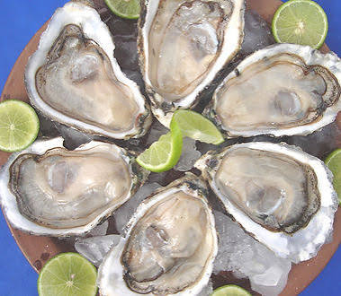
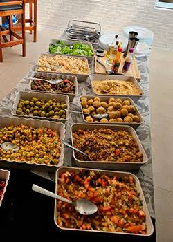

Descubra a riqueza da culinaria guineense,onde tradição,cultura e sabores autenticos se encontram. Pratos como o caldo de macarra, chabeu e arroz jollof mostram a herança e a criatividade do nosso povo. Maisque comida, cada sabor conta uma historia e celebra a nossa identidade.

Caldo de mancarra-tem origem nas tradições agriculas da Guiné-Bissau e da África Ocidental.
Arroz Jollof tem origem no antigo império, na África Ocidental. Com o tempo, o prato espalhou-se por varios paises da região, incluindo a Guiné-Bissau, cada pais criou sua propria versão adaptando ingredientes locais. Em Guiné-Bissau é muito servido em festas e celebrações.
Chabéu surgiu na comunidades costeiras da Guiné- Bissau. como o pais tem forte ligação com o mar e os rios, o prato tornou-se popular nas casas e celebrações familiares.
Coscoz de milho tem origem nas praticas agriculas tradicionais.
Frango Cafriela tem infuencia da presença colonial portuguesa, combinando com temperos naturais.
Caldo de Folhas feito com folhas de mandioca ou outras folhas verde locais, esta prato é comum no interior do pais.
Arroz de Marisco nas zonas costeiras é muito apreciado.
Doce de Coco Tradicional, o coco é bastante utilizado na colinária guiniense.
Caldo de Mancarra, Arroz Jollof, Chabéu, Coscoz de Milho, Frango Cafriela, Caldo de Folhas, Arroz de Marisco e Doce de Coco.
Titulo:Qual é o seu Prato Preferido

A gastronomia da Guiné-Bissau distingue-se de outras colinárias africanos e internacional pela sua forte ligação com a natureza, tradição e simplicidade dos ingredientes. Enquanto muitos paises utilizam diferentes tipos de óleo, na Guiné-Bissau o óleo de palma é essencial.
Diferente de paises mais interiores, a Guiné-Bissau tem grande consumo de peixe e marisco devido a sua extença costa marítima e rios abundantes.
Obs: Na Guiné-Bissau, a comida não é apenas alimentação - é união. Os pratos são preparados em grande guantidade para partilhar em festas, tabancas e cerimonias tradicionais.
A gastronomia guiniense mistura tradições africanas com influencias portuguesas, visiveis em pratos como cafriela, cozido, guizado, etc.